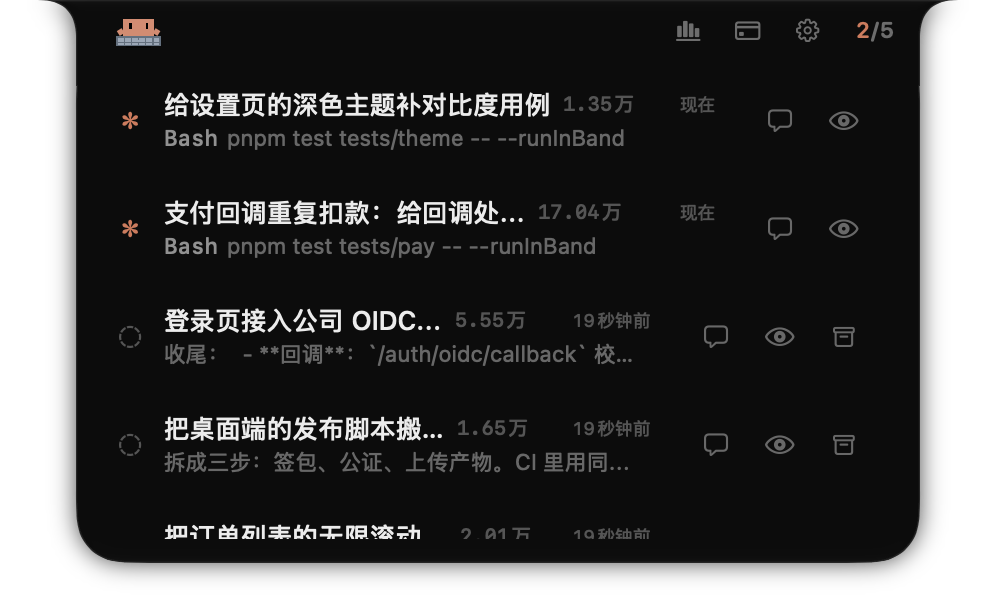
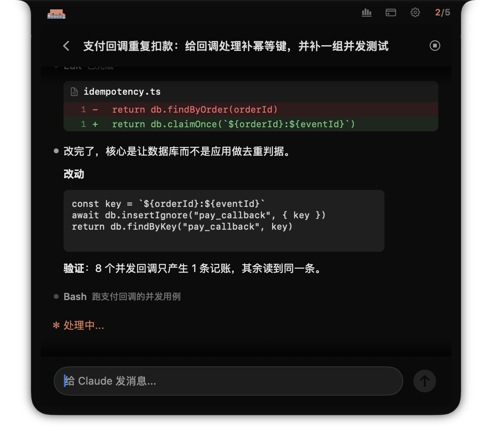
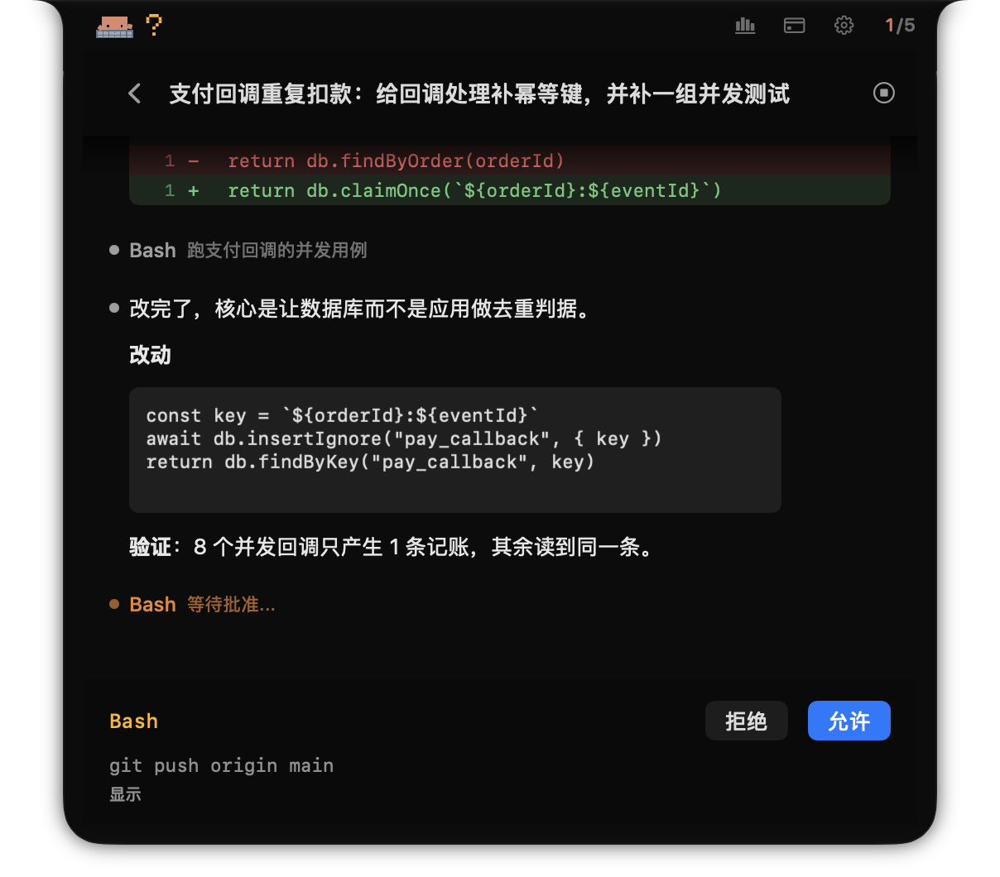
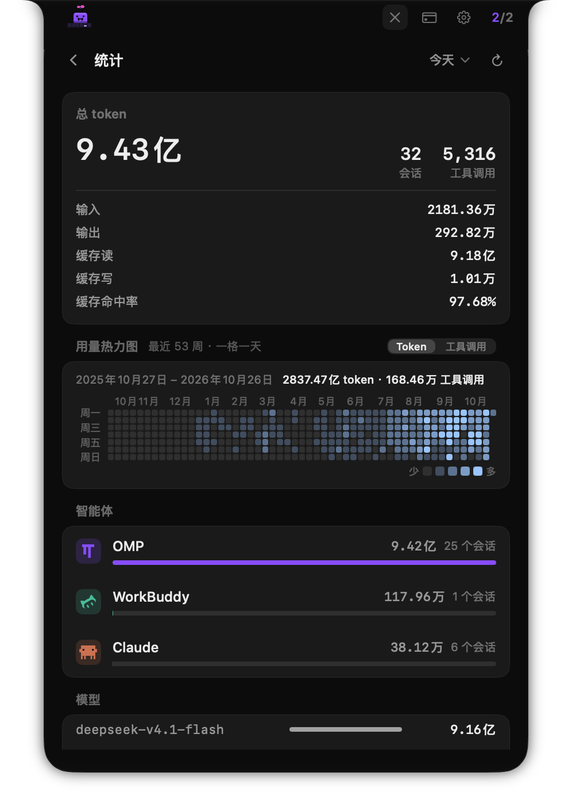
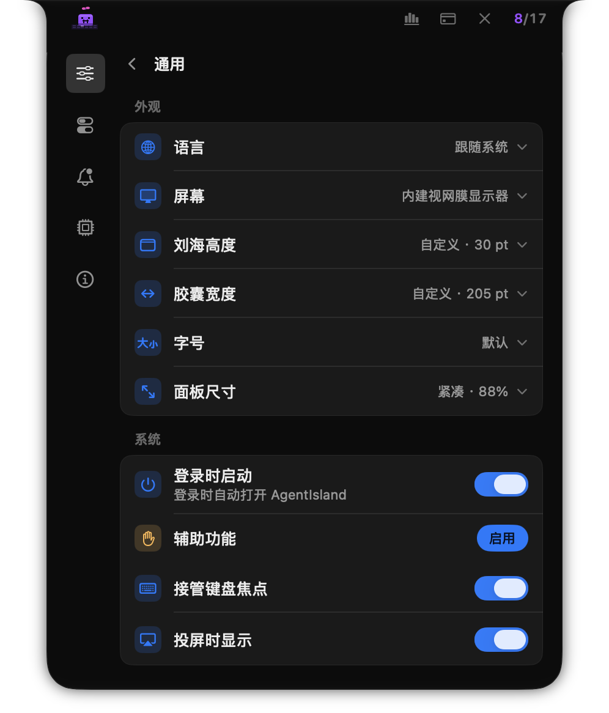
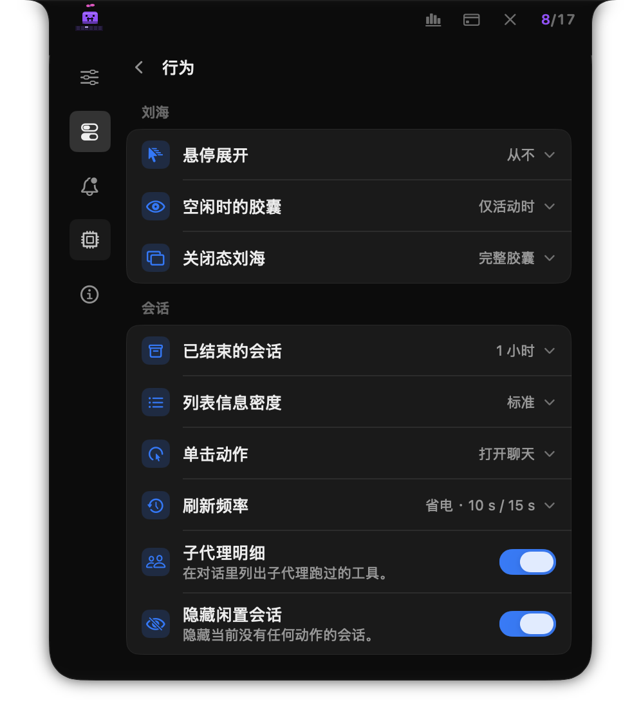
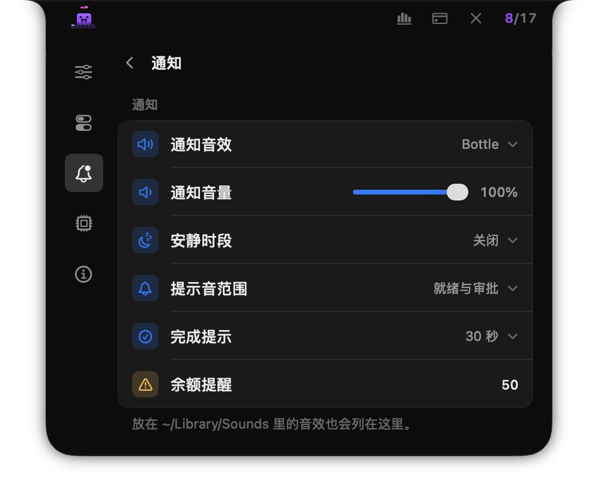
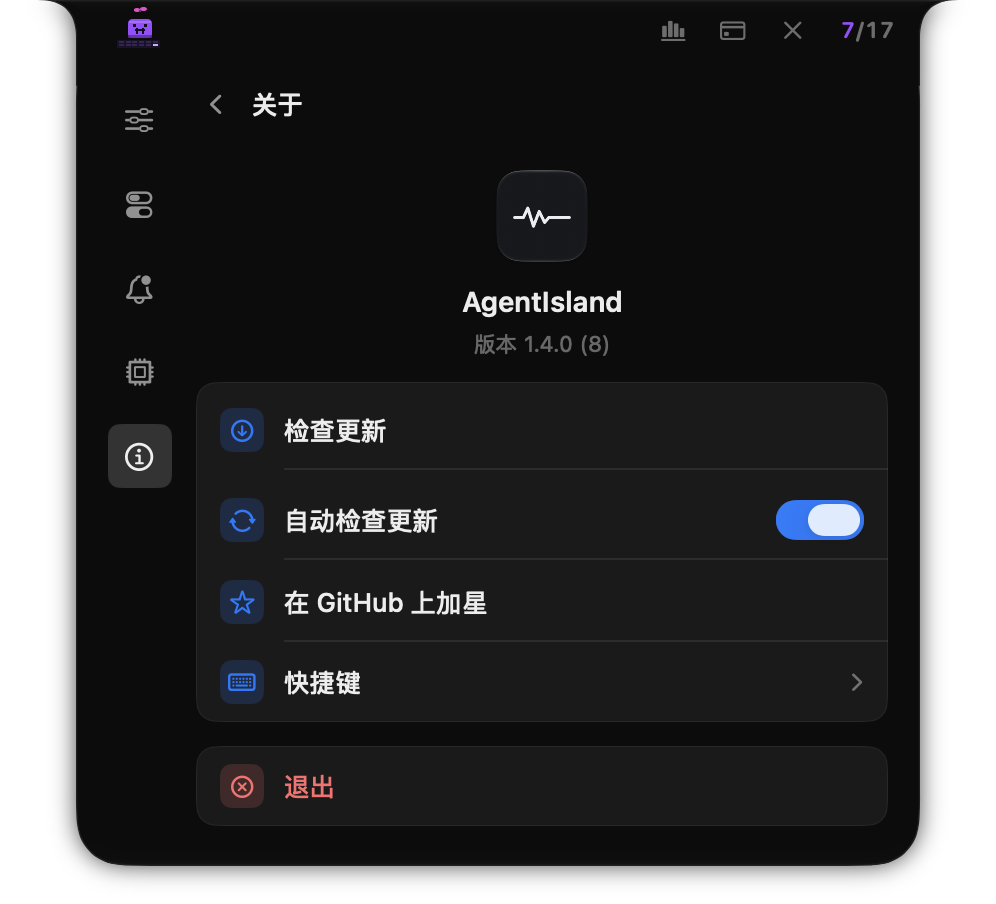
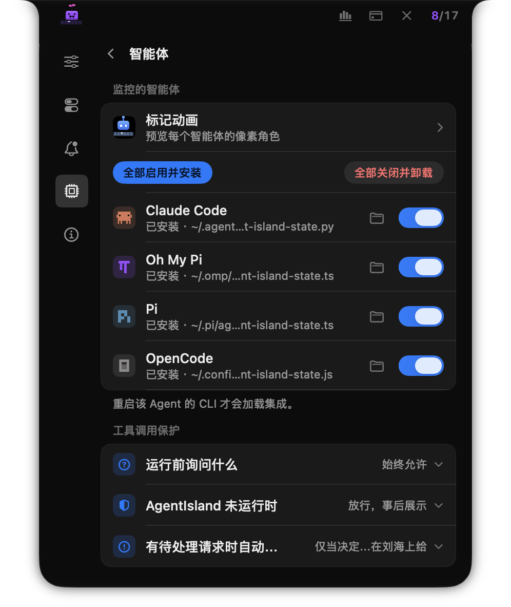
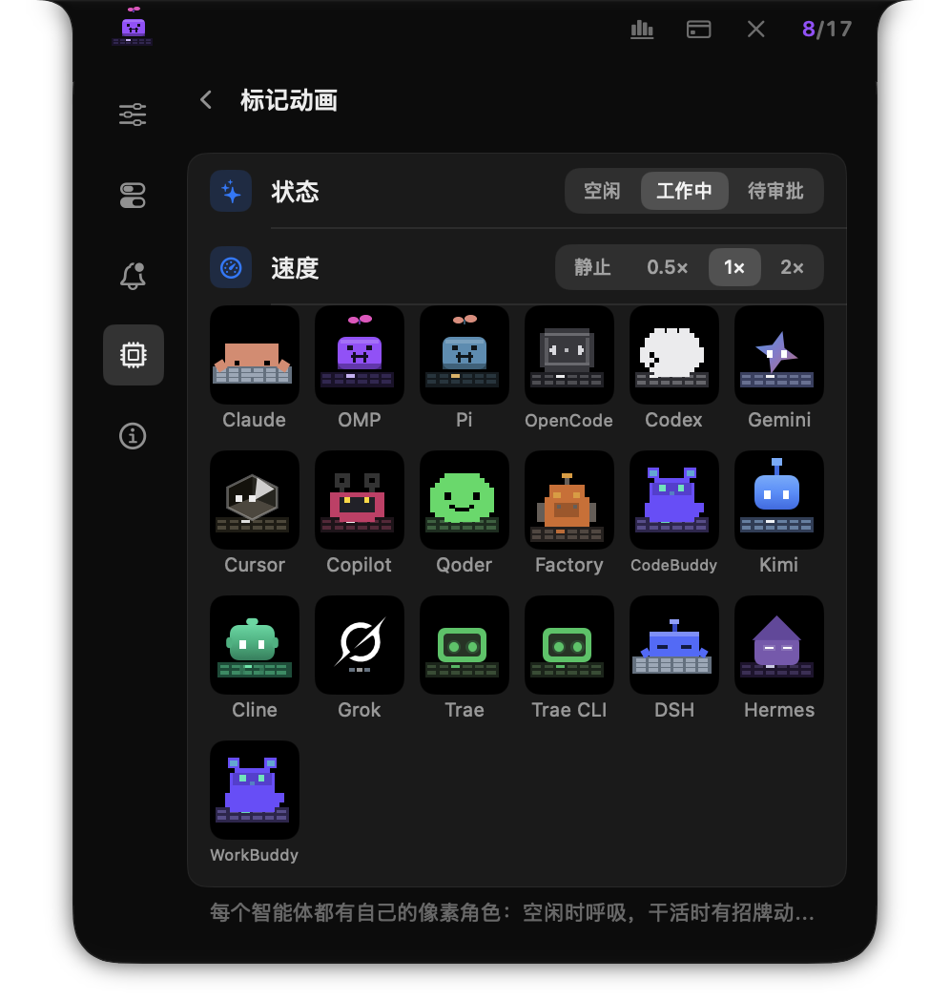

AgentIsland 是一个 macOS 菜单栏应用（LSUIElement，没有 Dock 图标）：它把 19 个编码 Agent CLI 的会话状态搬到 MacBook 刘海处的浮层里，让你抬眼就能看到谁在等你、谁在干活、谁刚答完。
本文覆盖产品形态、支持的 Agent 与能力边界、关键交互（会话列表、对话、审批、统计、设置、像素角色）、工作原理、隐私设计，以及安装与发布流程。所有数字都在本仓代码与其记录上现场核对过，不沿用旧文案。
| 术语 | 含义 |
|---|---|
| 会话（session） | 某个 Agent 的一次对话记录。身份由「Agent + 会话 id」构成（SessionKey）。 |
| 相位（phase） | 会话此刻的状态：空闲 / 处理中 / 等待输入 / 等待审批 / 压缩上下文 / 已结束。 |
| 集成（integration） | 写进 Agent 自己的配置里的 hook 脚本、扩展或插件，把事件送到本应用的 socket。 |
| 读数面 | 占满面板宽度的独立页面：统计与额度。它们不在设置侧栏里，分别由顶部的图表与信用卡按钮进入。 |
| 角色（mascot） | 每个 Agent 的运行时像素小人：空闲打盹、干活做招牌动作、需要你时跳起来。 |
同时开两个 Agent，你就要在两个 pane 之间切来切去；开到五个，一个权限提示能在你读代码时晾上十分钟。
这不是工具不够强，而是状态没有出口。每个 CLI 都把自己的进度、待批、错误写在自己的终端里；当你同时使用多个 Agent，注意力被分散到多个窗口，任何「等你决定」的瞬间都变成隐形的队列。
刘海是屏幕上你永远不会离开的那一条。AgentIsland 把它变成一块状态灯：
三条设计原则：① 不打扰 —— 默认只在挖孔右侧放计数；② 单一事实源 —— 所有状态只经过一个 actor；③ 本地优先 —— 不开端口、不发遥测、记录只读。
菜单栏图标是「应用入口」，要一直占位、还要处理点击与右键菜单；刘海面板是「状态表面」，只在需要时展开，关闭态可以缩到只剩一枚计数。相机挖孔本身画不进去，所以关闭态的信息必须落在挖孔两侧的菜单栏表面——三档「关闭态刘海」就是这道取舍的三个答案。
| 不是 | 原因 |
|---|---|
| 不是终端替代品 | 它不接管你的 shell、不解析 ANSI、不模拟键盘输入。真正执行工具的是 Agent 自己。 |
| 不是编排器 | 它不决定哪个 Agent 干活、也不合并结果；它只呈现已有会话并转发你的决定。 |
| 不是云服务 | 没有账号、没有服务端、没有遥测；所有状态在本机内存里，聚合计数存在本机数据库里。 |
| 不是「全自动」 | 审批是显式的人类决定；超时按拒绝处理，不会因为「没人答」而默认放行。 |
同一个面板，三种信息密度。关闭态回答「有没有事」，列表回答「谁在干什么」，对话回答「它到底做了什么」。
没有活动时，面板收成贴着挖孔的胶囊。三档由「关闭态刘海」决定：
| 档位 | 画什么 | 适合 |
|---|---|---|
| 只留计数（默认） | 仅在挖孔右侧画「活跃 / 总数」，左侧完全不占菜单栏 | 菜单栏已经很挤 |
| 只留挖孔 | 连计数都不画，关闭态只剩相机挖孔的剪影 | 追求绝对安静 |
| 完整胶囊 | 左侧像素角色 + 右侧计数（封面与上图即此档） | 想用余光看 Agent 状态 |
计数颜色与角色同源（取该 Agent 的品牌色）；状态由角色的动作（打盹 / 干活 / 跳起来）与琥珀色审批指示表达，而不是用颜色编码状态。
单击刘海展开。每一行回答四件事：谁（Agent 品牌标记）、什么任务（会话标题）、花了多少（本轮 token）、什么时候动的（相对时间）；第二行是最后一条消息或正在跑的工具。行内还可以直接打开聊天、定位终端、隐藏该会话。
| 相位 | 行首标记 | 含义 |
|---|---|---|
| 处理中 | 橙色星芒 | Agent 正在跑（工具或生成）；第二行是正在执行的工具。 |
| 等待审批 | 琥珀色感叹号 | 有工具调用在等你的决定；行内会出现允许 / 拒绝。 |
| 等待输入 | 空心圆 | Agent 已答完，或在等你补充信息。 |
| 空闲 / 已结束 | 虚线圆 | 没有活动；已结束的会话按「已结束会话保留」档定时移出。 |
子代理运行计入关闭态的分子，但不计入会话总数；它挂在派发它的 task 卡片下面。
未安装集成的 Agent 也能出现：应用扫描它们自己的记录目录（JSONL 或 SQLite），从内容推断状态；代价是新会话要等一个刷新周期才出现。
双击任意会话（或点行内的「打开聊天」）进入对话页。它读的是 Agent 自己写的会话记录，因此退出应用、重启 Mac 之后历史仍在。
omp/pi 的 task 运行，挂在派发它的卡片下面。
findByOrder → claimOnce）、Markdown 小标题与代码块；下方是正在跑的工具与输入框（演示会话挂了一个 Paseo 终端标识，因此输入框可用）。审批是请求 / 应答，而不是通知：集成会一直握着连接等你决定，决定再经同一条 socket 回传。
/tmp/agent-island.sock，不关闭连接，等一个决定。omp/pi 解除阻塞、OpenCode 调它的 HTTP reply 端点。omp/pi 按降级档处理）。rm -rf /、sudo rm、mkfs、dd … of=/dev/…、curl … | sh、反弹 shell 等会标红；除「始终允许」档外，它们永远不会走「不可达就放行」。
凡是能把决定回传的 Agent 都支持：Claude Code（及其分支 Qoder）、Oh My Pi / Pi（扩展闸门）、OpenCode（插件）、Codex、Gemini CLI、Trae CLI。其余 Agent 照常出现在列表里，审批留在它们自己的终端完成——这是能力边界，不是遗漏。
omp/pi 的闸门随 Agent 启用，没有第二个开关。启用它会同时抬高 omp 的扩展 handler 预算，好让工具调用等得及你；不想被打断时，把「运行前询问什么」改成「始终允许」——那才是出口，而不是关掉闸门。
接入面有三层：读得到记录（历史与状态）、装得上集成（实时事件）、回得去决定（审批）。不是每个 Agent 三层都齐。
| Agent | 会话记录 | 实时集成 | 刘海审批 | 子代理 |
|---|---|---|---|---|
| Claude Code claude | ~/.claude/projects/**/*.jsonl | 共用 hook 脚本 + settings.json | 支持 | 内部工具调用 |
| Oh My Pi omp | ~/.omp/agent/sessions/** | extensions/agent-island-state.ts | 支持 | task 运行 |
| Pi pi | ~/.pi/agent/sessions/** | 同上（另一份扩展） | 支持 | task 运行 |
| OpenCode opencode | ~/.local/share/opencode/opencode.db | plugins/agent-island-state.js | 支持 | task 运行 |
| Codex codex | $CODEX_HOME/sessions/** | hooks.json + [features] hooks | 支持 | — |
| Gemini CLI gemini | ~/.gemini/tmp/**/chats/*.jsonl | settings.json | 支持 | — |
| Cursor cursor | ~/.cursor/projects/**/agent-transcripts/** | hooks.json | — | — |
| Copilot copilot | ~/.copilot/jb/<id>/partition-*.jsonl | hooks/agent-island.json | — | — |
| Qoder qoder | ~/.qoder/projects/**/*.jsonl | settings.json | 支持 | Claude 式子代理 |
| Factory droid | ~/.factory/sessions/** | settings.json | — | Claude 式子代理 |
| CodeBuddy codebuddy | ~/.codebuddy/projects/** | settings.json | — | Claude 式子代理 |
| WorkBuddy workbuddy | ~/.workbuddy/projects/** | settings.json | — | Claude 式子代理 |
| Kimi Code CLI kimi | ~/.kimi-code/sessions/** | config.toml 的 [[hooks]] | — | — |
| Cline cline | VS Code 全局存储 | ~/Documents/Cline/Hooks/<事件> | — | — |
| Grok CLI grok | $GROK_HOME/sessions/**/chat_history.jsonl | hooks/agent-island.json | — | — |
| Trae trae | 没有可解析记录 | hooks.json | — | — |
| Trae CLI traecli | 没有可解析记录 | traecli.yaml 托管块 | 支持 | — |
| DeepSeek Harness dsh | 记录为 zstd 压缩，不解析 | 不装：由外部插件直写 socket | — | — |
| Hermes hermes | ~/.hermes/state.db | config.yaml 的 hooks: | — | delegate_task 运行 |
读表提示：「实时集成」列是事件通道（有它才有实时相位与审批）；「会话记录」列是历史来源（有它才有对话页与统计）。两列都可能独立缺失——例如 Trae 有集成但没有可解析记录。
每一行的 raw id（claude / omp / droid …）同时是集成脚本的 --source 与事件归属键：两侧必须逐字一致，且不能含冒号（会话键按第一个冒号切分）。
记录路径里的 ~ 指该 Agent 自己的配置根；环境变量（CODEX_HOME / GROK_HOME / CLAUDE_CONFIG_DIR）优先于界面里选的目录。
19 个 Agent 里，本机真实装过的只有一部分。因此这一块的证据分三档——动手改之前，先认清手里是哪一档。
| 档位 | 含义 | 涉及 |
|---|---|---|
| 本机实测 | 用真机记录与配置逐字核对过字段 | Codex、Qoder、CodeBuddy / WorkBuddy、Hermes；Claude / omp / Pi / OpenCode 长期使用 |
| 上游源码 | 逐条照参考实现，但本机无法复跑 | Gemini / Cursor / Copilot / Kimi / Cline / Grok / Trae / Trae CLI 的配置路径与事件表 |
| 合成载荷 | 只有验证矩阵造的信封能证明 | 事件名归一与回写形状（31 个 case / 337 条断言） |
/hooks/hooks，审核并信任 AgentIsland 的条目——在那之前 Codex 会静默忽略它们，看起来就像「不支持 Codex」。若某次更新重写了 hooks.json，需要再确认一次。
~/.hermes/shell-hooks-allowlist.json；只批一部分就是半死状态（未批的静默不跑）。授权按「事件 + 命令」精确匹配、长期有效；升级脚本后只有 hermes hooks doctor 会提示「脚本已变」，此时 revoke 再批准即可。
session_id 是否等于记录首行的 sessionId——不等时状态正常但历史为空；Provider 已按两种口径兜底，仍需真机确认。permission_request 回写形状按 Claude 信封实现，未真机验证。~/.workbuddy/settings.json 的 hooks（该文件同时是它自己的配置，含 sandbox 与插件开关）；本机已验证前半段：信封能让记录路径与会话登记都正确。AgentKind 加一个 case（rawValue 即集成侧 source id），补显示名、二进制名、审批能力、子代理与交互式工具名。AgentHooks 的 hookSpec 补一行：写入格式、配置路径、事件表、回写协议；没有配置文件型 hook 的填 nil。AgentProvider（记录位置、会话 id、cwd、子代理文件、集成状态）并在注册表登记；home 必须过路径归一。AgentTranscriptSchema（JSONL 增量或整文档指纹）。gate.sh --with-tests：表完整性用例会抓漏填、rawValue 重名、阻塞事件却不许回传决定。这 7 处之所以值得，是因为它们把「一个新 CLI」变成可审批、可统计、可回看的会话——而不是只多一个图标。
这些不是「已知缺陷」，而是证据边界：装上真机后应优先复核；它们也是后续版本最明确的验证任务。
统计页是一条独立读数面：顶部图表按钮一点直达，占满面板宽度。数字来自对 Agent 自身会话记录的索引。

| 指标 | 怎么算 |
|---|---|
| 总 token | 输入 + 输出 + 缓存读 + 缓存写；只算记录里核对过 token 字段的 Agent。 |
| 缓存命中率 | 缓存读 ÷（输入 + 缓存读 + 缓存写）。 |
| 会话数 | 按会话去重，子代理不计入会话数（但它的 token 计入总量）。 |
| 工具调用 | 按各 Agent 自己的记录格式提取；无字段则不出现。 |
| 范围 | 今天 / 本周 / 本月 / 全部；热力图固定近 53 周，不跟范围选择器。 |
usage.sqlite 里，会话记录始终只读。侧栏是固定的五个配置页与收尾的「关于」；统计与额度不在侧栏里，它们是读数面。「标记动画」从智能体页进入，「快捷键」从关于页进入。
| 页面 | 内容 |
|---|---|
| 通用 | 语言、屏幕、胶囊高度与宽度（可步进微调，也可键入精确磅值）、内容字号、面板尺寸 · 登录时启动、辅助功能状态、展开时是否接管键盘焦点、投屏 / 录屏 / 截屏中是否显示面板。 |
| 行为 | 悬停展开、空闲胶囊、关闭态刘海三档 · 已结束会话保留、行信息密度、单击动作、状态复核与会话扫描间隔 · 对话里的子代理明细、隐藏闲置会话。 |
| 通知 | 音效（点一下即试听）、音量、安静时段、提示音范围（仅就绪 / 就绪与审批）、完成提示，以及余额提醒（自填金额，留空即关闭）。 |
| 智能体 | 逐 Agent 启用 / 关闭与集成状态、配置目录、工具调用保护范围与离线策略；第一行是「标记动画」入口。 |
| 关于 | 版本、检查更新、自动检查更新、加星、快捷键、退出。 |
| 统计 | Token / 会话 / 工具调用、趋势、Agent 与模型拆分、53 周热力图、全量重扫（顶部图表按钮进入）。 |
| 额度 | 多个 New API 账号的余额、身份与倍率、密钥额度、实例地址与版本；只在打开这一页时取数（外加余额提醒的慢速后台检查）。 |
| 标记动画 | 19 枚角色一次铺开；状态（空闲 / 工作中 / 待审批）与速度（静止 / 0.5× / 1× / 2×）；从智能体页进入。 |
| 快捷键 | 可改绑的键盘动作与冲突检测；从关于页进入。 |


展开一个选择器时，选项就地展开、面板随之长高，整份选项都可见，因此不会有「最后一个档位掉到可视区外」。窄档（面板尺寸「紧凑」）下侧栏退回纯图标。


所有 Agent 初始都是关闭的 —— 应用不会自己接管任何工具。打开某一行，或点「全部启用并安装」，才会在那一刻为它写 hook 条目；每个被改写的配置文件旁留 <文件名>.agent-island-backup。关闭某个 Agent 只摘掉它的条目，共用脚本保留（别的工具还在用）。

状态显示「已过期 — 请重装」表示磁盘上那份不是本构建期望的版本（手改过，或升级后尚未重写）：把该 Agent 关掉再打开即可重写。
Agent 的「运行时标记」是像素角色，不是品牌字形：19 个 Agent 各有一枚会打盹、会干活、会跳起来喊你的小人。

t 永远画出同一帧，所以能离屏定帧逐帧比对。| 共用一枚的角色 | 差异 |
|---|---|
| Pi / Oh My Pi | 画法一份、配色是入参：Pi 取自己字标的三色，omp 取品牌紫与相邻的粉端。 |
| Trae / Trae CLI | 同一产品线，共用标记与动作。 |
| CodeBuddy / WorkBuddy | WorkBuddy 内嵌 CodeBuddy CLI，角色与记录方言都共用。 |
为什么强调「时间是纯函数」：动画的每一帧只由 t 决定，定帧可以离屏逐帧比对；环境变量一旦没传到，就静默退回「按当前时刻现算」——那会成为随机画面的来源。
品牌字形仍然在，但只当静态身份标记：会话角标、设置行的 Agent 图标这类 10–12pt 的密集场合。分工是「字形认身份、角色表达状态」。
一条本地 Unix socket、一块贴在刘海上的 NSPanel、以及 Agent 自己的文件；没有守护进程，不开端口。
SessionStore.process(_:)，视图从不直接改状态。process(_:)：相位冲突时以「服务端持有待批连接」这个事实为准，而不是让一条迟到的状态上报把卡片顶掉。PRAGMA query_only，不写数据。| 相位 | 进入条件 | 退出 |
|---|---|---|
| 空闲 | 会话登记后尚无活动 | 任何处理事件 |
| 处理中 | 提示提交、工具开始、流式生成 | Stop / 待批 / 心跳判定空闲 |
| 等待审批 | 阻塞型审批请求（服务端持有连接） | 允许 / 拒绝 / 超时 |
| 等待输入 | Agent 答完或主动提问 | 下一条提示 |
| 压缩上下文 | PreCompact | PostCompact |
| 已结束 | SessionEnd / 进程消失 / 记录长时间无写入 | 同一会话被恢复时重开 |
「等待审批」是唯一由事实而非上报决定的相位：只要服务端还持有那条连接，迟到的状态上报就不能把它推回处理中。
本地优先不是口号：应用没有服务端、不开端口、不发遥测，联网只有两处、且都是只读。
| 数据 | 位置 / 处理 |
|---|---|
| 会话内容 | Agent 自己的记录文件（JSONL / SQLite）。应用只读。 |
| 会话状态 | 应用内存。退出即消失；下次启动由记录与事件重建。 |
| 用量聚合 | 本机 usage.sqlite，只存计数（token / 工具 / 会话），不含消息正文。 |
| 偏好 | 偏好域 com.celestial.AgentIsland（UserDefaults）。 |
| 集成文件 | Agent 自己的配置目录；被改写的文件旁留 .agent-island-backup。 |
/api/status（公开端点、不带凭据），用来读额度单位与版本。除此之外不向任何地方发送数据；没有埋点、没有崩溃上报、没有账号体系。
AgentIsland.app 从 Applications 拖走。~/.agent-island/hooks/agent-island-state.py 与各工具配置里的条目。defaults delete com.celestial.AgentIsland 清偏好；删除 ~/Library/Application Support/AgentIsland/usage.sqlite 清用量聚合。系统权限：「通用」页会显示「辅助功能」授权状态——全局事件监听与终端定位依赖它；未授权时这部分能力受限，而 tmux / Paseo 通道的消息与中断仍可用。
系统要求：macOS 15.6 及以上，Apple Silicon。产物是 ad-hoc 签名、未经 Apple 公证。
AgentIsland-x.y.z.dmg。Applications。xattr -dr com.apple.quarantine /Applications/AgentIsland.app这不是文件损坏：ad-hoc 签名没有 Developer ID 证书链，因此无法公证。这个取舍换来的是「任何人都能自己构建同一份产物并校验」。
走与发布同一套流程，需要 Xcode：
git clone <仓库地址> && cd agent-island
./scripts/build-and-install.sh # 门禁 → 归档 → ad-hoc 重签 → 安装 → 启动
./scripts/build-and-install.sh --build-only # 只产出 build/export/AgentIsland.app 与 releases/*.dmg
./scripts/build-and-install.sh --no-launch # 只安装，不启动脚本第一步会跑 scripts/gate.sh：本地化守卫 + Release 编译必须 0 诊断，不达标即中止。
| 命令 | 判据 |
|---|---|
| ./scripts/gate.sh | BUILD SUCCEEDED + 编译诊断 0 条 + 本地化守卫 0 错误 0 警告；任一步不达标即 exit 非 0。 |
| ./scripts/gate.sh --with-tests | 追加 build-for-testing + test-without-building，跑 AgentIslandTests（当前 73 个测试文件 / 711 个用例）。 |
| python3 scripts/check-localization.py --strict | 缺键、格式符不一致、绕过自研查表、未引用键（当前 448 条文案，en / zh-Hans 双侧）。 |
CURRENT_PROJECT_VERSION：appcast 里的 sparkle:version 就是它；不变则已装用户收不到更新提示。Info.plist，私钥不入库。sign_update --verify 通过。| 路径 | 内容 |
|---|---|
| build/export/AgentIsland.app | 归档并重签后的应用包 |
| releases/*.dmg | 本地产出的安装镜像 |
| docs/product/ | 本文档的打印版 HTML 与截图（可自行重出片） |
常见失败：门禁报本地化错误 → 先跑 check-localization.py --strict；归档签名失败 → 确认 codesign --force --deep --sign - 可用；装上但界面没变 → 确认读的是新构建（版本号或 catalog 里的新键）。
一张表说清「现在是什么、为什么这样、代价是什么」。读者最信的往往是这一段。
| 事项 | 现状 | 代价 / 理由 |
|---|---|---|
| 签名与分发 | ad-hoc 签名，不公证 | 首次打开需要右键「打开」或清隔离属性；换来无需证书即可自建与复现。 |
| 形态 | 没有 Dock 图标、没有菜单栏图标、没有常驻守护进程 | 刘海面板是唯一界面；应用不在时集成不挡路，回落到 Agent 自己的提示。 |
| 平台 | macOS 15.6+，Apple Silicon | 只构建本机 arm64 产物；依赖刘海或菜单栏几何与系统材质。 |
| 启用口径 | 默认全关，显式启用才写集成 | 首次使用需要逐行打开（或一次「全部启用并安装」）；不会替用户接管工具。 |
| 审批能力 | 8 个 Agent 可回传决定 | 其余 Agent 只在列表与对话里可见，审批留在各自终端（它们没有阻塞式权限 hook）。 |
| 统计口径 | 只统计记录里可核对的字段 | Gemini / Kimi / Cline / Grok / Trae / Trae CLI / DSH 不出现在统计页；宁缺毋滥。 |
| DSH 接入 | 记录为 zstd 压缩，应用不解析 | 状态依赖外部 dsh 插件直写 socket；不装插件就没有事件。 |
| 屏幕捕获 | 默认不参与截屏 / 录屏 / 共享 | 该窗口也不参与窗口共享类系统服务；需要时用「投屏时显示」关掉。 |
| 会话发现 | 未装集成时靠扫描记录目录 | 新会话要等一个刷新周期；记录也只有 Agent 自己写了才有。 |
| 空闲回收 | 无进程的会话在记录两分钟无写入后结束；带 pid 的按进程存活回收 | 列表不会无限累积；继续该会话时记录再次增长，会被重新发现。 |
| 状态一致性 | 单入口 actor；待批事实优先于状态上报 | 相位冲突时以「服务端持有待批连接」为准，避免卡片被迟到事件顶掉。 |
| 调试 | 日志统一走 os.Logger（subsystem com.celestial.AgentIsland） | debug 行默认不落盘，只能实时流式观察；排障需要 log stream。 |
AgentIsland.app 后，在新机器上重新授权辅助功能即可。defaults export / import com.celestial.AgentIsland 迁移；用量聚合在 usage.sqlite，可一并复制。| 动作 | 默认组合 | 说明 |
|---|---|---|
| 返回 / 收起 | Esc | 对话 → 列表、设置 → 列表、列表 → 收起面板。 |
| 打开设置 | ⌘ , | 再按一次回到列表；从统计 / 额度回来时回到上次的设置分组。 |
| 打开统计 | ⌘ ⇧ S | 统计页与列表之间切换。 |
| 允许待批 | ⌘ ↩ | 批准最靠前的待处理请求。 |
| 拒绝待批 | ⌘ ⌫ | 拒绝最靠前的请求；交互式提问按「跳过」处理。 |
| 选择 / 打开 | ↑ ↓ · ↩ | 列表内上下选择，回车打开对话；⇧↩ 定位终端。 |
全部动作可在「关于 → 快捷键」里改绑，并做冲突检测；只有「唤出 / 收起」允许注册成全局热键。
| Agent | 写入位置（仅在被启用时） |
|---|---|
| Claude Code | ~/.agent-island/hooks/agent-island-state.py + ~/.claude/settings.json 的 hook 条目 |
| Oh My Pi / Pi | <agent 目录>/extensions/agent-island-state.ts |
| OpenCode | ~/.config/opencode/plugins/agent-island-state.js |
| Codex | $CODEX_HOME/hooks.json；另在 config.toml 的 [features] 下设 hooks = true |
| Gemini CLI / Cursor / Copilot / Qoder / Factory / CodeBuddy / WorkBuddy | 各自的 settings.json / hooks.json（共用同一份 hook 脚本） |
| Kimi Code CLI | ~/.kimi-code/config.toml 的 [[hooks]]（旧配置回退 ~/.kimi/config.toml） |
| Cline | ~/Documents/Cline/Hooks/<事件名>，每事件一个可执行文件 |
| Grok CLI / Trae / Trae CLI | $GROK_HOME/hooks/agent-island.json / ~/.trae/hooks.json / ~/.trae/traecli.yaml |
| Hermes | ~/.hermes/config.yaml 的 hooks: 映射（共用 hook 脚本） |
| DeepSeek Harness | 不写：由外部 dsh 插件直接写 socket |
除 Claude 外都引用同一份脚本：一份实现、一处升级。单个 Agent 卸载只摘自己的条目，脚本本身保留。
./scripts/gate.sh --with-tests：编译 0 诊断、本地化 0 错误 0 警告、711 个用例通过。| 术语 | 一句话 |
|---|---|
| source id | Agent 的稳定标识（如 omp / droid），集成侧与事件归属都用它。 |
| 闸门（gate） | omp/pi 扩展把工具调用拦住、等刘海决定的机制。 |
| 降级档 | 应用不可达时闸门的处置：默认放行并提示 / 一律拒绝 / 只读放行。 |
| 读数面 | 统计与额度两条占满面板的独立页面。 |
文档版本：2026-10-26 · 对应代码快照 e1a7b41 · 截图与数字均在当次核对。